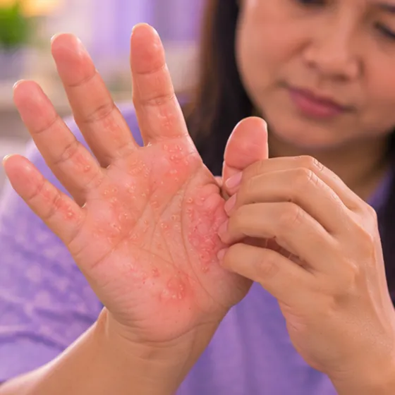

Lepuh pada tapak tangan
Gelembung kecil berisi cecair pada tapak tangan, selalunya akibat geseran, haba, peluh atau ekzema
Apa itu
Gelembung cecair jernih terbentuk pada kulit tapak tangan. Memegang alat, berkebun atau bersenam sering menjadi puncanya, tetapi ekzema, melecur dan sesetengah jangkitan juga boleh.
- Tapak tangan
- Alat, gim, berkebun, peluh
- Lepuh yang pedih atau gatal
- Jumpa doktor
- Doktor keluarga; pakar kulit (dermatologi) jika kerap berulang
- Biasa pada
- Sesiapa sahaja; mereka yang berkebun, ke gim, guna alat, dan orang berekzema
- Berjangkit
- Sesetengah punca boleh berjangkit, seperti penyakit tangan, kaki dan mulut atau kudis buta
- Perjalanan
- Lepuh akibat geseran biasanya reda dalam beberapa hari hingga beberapa minggu; punca lain berbeza-beza
Tanda biasa

Lepuh kecilVesikel 
Lepuh kecil gatal di tanganVesikel dishidrotik
Tanda-tanda lain
- Rasa sakit di tempat tangan memegang atau bergesel
- Kulit kering, tebal, merekah atau mengelupas apabila lepuh kering
- Lepuh pada kaki atau dalam mulut juga, pada kanak-kanak yang demam ringan
Mengapa ia berlaku
- Geseran atau pegangan, seperti daripada alat, berkebun, peralatan gim atau sukan
- Haba atau melecur akibat kuali panas, air, minyak atau matahari
- Sejenis ekzema tangan dengan lepuh kecil yang gatal; tekanan, alahan atau kulit lembap boleh mencetuskannya
- Terkena sabun, bahan pencuci, tumbuhan atau bahan kimia
- Jangkitan, seperti penyakit tangan, kaki dan mulut, cacar air atau kudis buta
Jumpa doktor dahulu jika
- Lepuh dengan bengkak pada muka, bibir atau lidah, sukar bernafas atau rasa hendak pitam: hubungi 999
- Lepuh akibat melecur teruk, kuali panas, minyak panas, bahan kimia atau kejutan elektrik: ke hospital sekarang
- Lepuh yang meluas, kulit mengelupas, atau luka di mulut atau mata, terutamanya selepas ubat baharu: ke hospital sekarang
- Tapak tangan merah, panas, bengkak, sakit, bernanah, atau jalur merah di lengan, dengan atau tanpa demam: jumpa doktor hari ini
- Bayi atau kanak-kanak berlepuh yang demam tinggi, tidak mahu minum atau sangat mengantuk: ke hospital sekarang
- Lepuh yang terus berulang atau tidak reda selepas beberapa minggu: jumpa doktor
Jika mana-mana berkenaan, sila jumpa doktor sebelum sesi.
Halaman ini ialah maklumat am. Sila terus mengambil ubat biasa anda dan terus berjumpa doktor.
Teruskan mengambil ubat biasa anda dan terus berjumpa doktor. Sesi kami ialah sokongan lembut dan tidak menggantikan rawatan perubatan.
Menjaga diri

Jangan picit atau korekJangan sentuh 
Pastikan luka bersih dan bertutupPenjagaan luka 
Pastikan kulit lembapPenjagaan emolien
Lebih banyak cara menjaga diri
- Rehatkan tangan daripada apa yang menyebabkannya, dan pakai sarung tangan berlapik semasa guna alat, berkebun atau di gim
- Tingkatkan tugas yang melibatkan pegangan secara perlahan-lahan supaya kulit sempat menebal
Beritahu ahli terapi anda
- Kulit luka, merah atau sakit
- Demam atau jangkitan aktif
- Alahan teruk
Ahli terapi anda akan menyemaknya bersama anda sebelum bermula.
Soalan dan jawapan
Apakah Lepuh pada tapak tangan?
Gelembung kecil berisi cecair pada tapak tangan, selalunya akibat geseran, haba, peluh atau ekzema. Gelembung cecair jernih terbentuk pada kulit tapak tangan. Memegang alat, berkebun atau bersenam sering menjadi puncanya, tetapi ekzema, melecur dan sesetengah jangkitan juga boleh.
Apakah tanda biasa Lepuh pada tapak tangan?
Lepuh kecil · Lepuh kecil gatal di tangan
Mengapa Lepuh pada tapak tangan berlaku?
Geseran atau pegangan, seperti daripada alat, berkebun, peralatan gim atau sukan · Haba atau melecur akibat kuali panas, air, minyak atau matahari · Sejenis ekzema tangan dengan lepuh kecil yang gatal; tekanan, alahan atau kulit lembap boleh mencetuskannya · Terkena sabun, bahan pencuci, tumbuhan atau bahan kimia · Jangkitan, seperti penyakit tangan, kaki dan mulut, cacar air atau kudis buta
Bagaimana menjaga diri dengan Lepuh pada tapak tangan?
Jangan picit atau korek · Pastikan luka bersih dan bertutup · Pastikan kulit lembap
Bolehkah sesi AI Body Master membantu Lepuh pada tapak tangan?
Sesi ialah sokongan meridian tanpa jarum yang lembut untuk kesejahteraan anda. Ia tidak merawat atau menyembuhkan Lepuh pada tapak tangan dan tidak menggantikan ubat atau doktor anda. Beritahu ahli terapi anda sebelum sesi bermula.
Keadaan berkaitan
Rujukan: General information based on public health sources such as Mayo Clinic, NHS, Cleveland Clinic and NCBI StatPearls.
Halaman dikemas kini: 2026-11-09